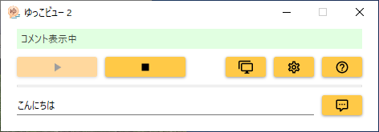
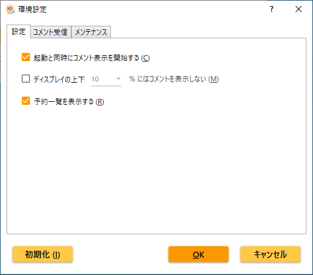

はじめに
概要
ゆっこビュー 2 は、入力したコメントをデスクトップ上に流れるように表示するためのツールです。動画サイトのような雰囲気を味わえます。
マルチディスプレイに対応しているので、2 枚目のディスプレイなどにコメントを流すこともできます。
動画持ち込みカラオケ用のブラウザリクエストツールであるゆかり（ゆーふうりん氏開発）との連携機能も備えています。ゆかりで動画を再生中にゆかりからコメントを書き込むと、動画の再生中にコメントを流すことができます。
（補足）
ゆっこビュー 2 は、ゆっこビュー（初代）の後継となるツールです。
ゆっこビュー（初代）は既に開発を終了しましたので、今後はゆっこビュー 2 をご利用下さい。
（補足）
本ヘルプで縮小表示されている画像は、クリックすると原寸大で表示されます。
進化ポイント
前世代のゆっこビュー（初代）と比べて、ゆっこビュー 2 は以下のような点が進化しています。
シンプルでモダンな UI

メインウィンドウは必要最小限の機能をコンパクトに整理しました。ゆっこビュー（初代）と比べるとメインウィンドウのサイズは半分以下になっています。
デザインもパステル調の爽やかなものになりました。ゆかりすたー 4 NEBULA とお揃いのデザインです。
MPC-BE 自動追随
マルチディスプレイ環境において、MPC-BE が表示されているディスプレイに自動追随してコメントを流すことができます。
予約一覧表示
動作環境
ゆっこビュー 2 公式ページのサポート情報をご覧ください。
インストール
ゆっこビュー 2 のインストール
ゆっこビュー 2 を Microsoft Store から入手することでインストールが完了します。
更新（バージョンアップ）は自動的に行われます。更新版が公開された場合、何度かゆっこビュー 2 を使用しているうちに自動的に更新されますので、通常は何ら更新作業は必要ありません。自動更新を待つのではなくすぐに更新したい場合は、Microsoft Store で更新してください。
ショートカットの作成
 ゆっこビュー 2 をインストールすると、自動的にスタートメニュー（「や」行の位置）に登録されます。
ゆっこビュー 2 をインストールすると、自動的にスタートメニュー（「や」行の位置）に登録されます。
スタートメニューに登録されているゆっこビュー 2 のアイコンをデスクトップに（左ボタンで）ドラッグ＆ドロップすることにより、デスクトップ等にショートカットを作成することもできます。
チュートリアル
ゆっこビュー 2 でコメントを書き込み、デスクトップ上をコメントが流れるまでの一連の流れを説明します。
起動
スタートメニュー（「や」行の位置）からゆっこビュー 2 を起動すると、スプラッシュウィンドウ（オープニングウィンドウ）が表示された後で、メインウィンドウが表示されます。
また、デスクトップ全体が緑色の枠に囲まれ、「コメント表示を開始します」というコメントがデスクトップ上部を右から左へ流れていきます。
 緑色の枠はコメントが流れる可能性のある範囲を示すもので、約 5 秒ほど経つと自動的に消えます。
緑色の枠はコメントが流れる可能性のある範囲を示すもので、約 5 秒ほど経つと自動的に消えます。
「このアプリの機能のいくつかが Windows Defender ファイアウォールでブロックされています」という表示が出る場合があります。その場合は、チェックボックスを 2 つともオンにしてから、「アクセスを許可する」をクリックしてください。管理者権限が必要な場合があります。
 メインウィンドウ上部が赤色表示となり、「ゆかり設定ファイルが見つかりませんでした」などと表示されている場合、ゆかり連携機能が使えませんが、このチュートリアルはその状態でも問題ありません。
メインウィンドウ上部が赤色表示となり、「ゆかり設定ファイルが見つかりませんでした」などと表示されている場合、ゆかり連携機能が使えませんが、このチュートリアルはその状態でも問題ありません。
コメント書き込み
メインウィンドウ下部のコメント書き込み欄（初期状態では「こんにちは」と入力されています）に、投稿したいコメントの内容を書き込みます。
その右側にあるコメント投稿ボタン（ ）をクリックするとコメントが投稿され、デスクトップ上部を流れていきます。
）をクリックするとコメントが投稿され、デスクトップ上部を流れていきます。
続けてコメントを投稿すると、色違いでコメントが流れていきます。
以上でチュートリアルは終了です。
より詳しい使い方は次章以降をご覧ください。
メインウィンドウ
色つきステータスラベル
メインウィンドウ上部は、色でゆっこビュー 2 の状態が分かるステータスラベルになっています。
緑色の時は、コメントが表示可能な状態です。
紫色（青色）の時は、コメントの表示を停止しています。
赤色の時は、何らかのエラーが発生しています。主にゆかり連携機能関連のエラーなので、ゆかり連携機能を使用しない場合は赤色でも問題ありません。ステータスラベルをクリックすると対応策が表示されます。
各種ボタン
- 開始ボタン（）……コメント表示を開始します。
- 停止ボタン（）……コメント表示を停止します。
- ディスプレイ選択ボタン（
 ）……ディスプレイ選択ウィンドウを表示します。
）……ディスプレイ選択ウィンドウを表示します。 - 環境設定ボタン（
 ）……環境設定ウィンドウを表示します。
）……環境設定ウィンドウを表示します。 - ヘルプボタン（）……本ヘルプ等、さまざまな情報を表示するためのメニューが表示されます。
- コメント投稿ボタン（
 ）……入力したコメントを投稿します。コメント停止中は投稿できません。
）……入力したコメントを投稿します。コメント停止中は投稿できません。
キーボード操作
各種ボタンにマウスカーソルを合わせるとツールチップが表示されますが、そこに記載のアルファベットと Alt キーを押すことにより、キーボードでもボタン操作が行えます。
例えば、ディスプレイ選択ボタンは「ディスプレイ選択 (D)」と表示されますので、Alt+D でディスプレイ選択ボタンを押すことができます。
コメント入力後、Enter キーでも投稿することができます。
F1 キーでヘルプが表示されます。
ディスプレイ選択
 メインウィンドウのディスプレイ選択ボタン（
メインウィンドウのディスプレイ選択ボタン（ ）をクリックすると、コメント表示ディスプレイ選択ウィンドウが表示されます。
）をクリックすると、コメント表示ディスプレイ選択ウィンドウが表示されます。
マルチディスプレイ環境でゆっこビュー 2 を使用している場合、どのディスプレイにコメントを表示するか、選択することができます。
MPC-BE が表示されているディスプレイ
MPC-BE が表示されているディスプレイを自動検出し、そのディスプレイにコメントを表示します。
ゆかり連携機能を使用している場合に便利な機能です。
（補足）
コメント表示が MPC-BE のディスプレイに移動するタイミングは、新たにコメントを投稿した時です。既存のコメントが流れている時に MPC-BE がディスプレイを移動しても、既存のコメントは移動しません。
指定ディスプレイ
指定したディスプレイにコメントを表示します。
（補足）
例えば、前回起動時にディスプレイ 2 が指定されたものの、今回起動時はディスプレイが 1 つしかない場合は、ディスプレイ 1 にコメントが表示されます。ディスプレイ 2 が接続されると、次のコメントからディスプレイ 2 に表示されます。
環境設定

メインウィンドウの環境設定ボタン（ ）をクリックすると、環境設定ウィンドウが表示されます。
）をクリックすると、環境設定ウィンドウが表示されます。
ゆっこビュー 2 の全体的な動作に関する設定を行います。
設定タブ
起動と同時にコメント表示を開始する
この設定を有効にすると、ゆっこビュー 2 の起動と同時にコメント表示が開始されます。
ディスプレイの上下にはコメントを表示しない
通常、デスクトップの上から順にコメントが表示されていきますが、この設定を有効にすると、デスクトップの上から少し隙間を空けてコメントが表示されるようになります。同様にデスクトップの下側にも隙間が空きます。
どのくらい隙間を空けるか、パーセントで指定できます。例えば、フル HD（縦 1080 ピクセル）のディスプレイを使っていて、「10」パーセントを指定すると、上下それぞれ 108 ピクセル程度にはコメントが表示されなくなります。
予約一覧を表示する
この設定を有効にすると、ゆかり連携していてかつ、ゆかりが自動再生モードになっている場合、曲終了～次曲開始までの間、予約されている曲が一覧表示されます。
コメント受信タブ：コメントサーバー指定方法
ゆかり連携機能を使用する際、コメントサーバーをどのように指定するか選べます。
ゆかりの設定を自動取得
「ゆかり設定ファイル」を読み込み、ゆかりの設定と同じコメントサーバーを使用します。通常はこちらを選んでください。
ゆかり設定ファイルは通常、
C:\xampp\htdocs\config.ini
です。
手動で設定
ゆかりの設定と同じコメントサーバーを使用したくない場合は、こちらでコメントサーバーとルーム名を指定します。
コメント受信タブ：コメント受信方法
ゆかり連携機能を使用する際、コメントサーバーからのコメント受信方法を選べます。
プッシュ通知
通常はこちらを選択して下さい。コメントを書き込んでから画面に表示されるまでのタイムラグが短く、また、余計な通信を抑えてパソコンの負荷も軽くなります。
プッシュ通知でうまくコメントが受信できない場合は、ゆかりのバージョンが最新かどうか確認して下さい。
ダウンロード
どうしてもプッシュ通知でうまくコメントが受信できない場合のみ、こちらを選択して下さい。
メンテナンスタブ
ゆっこビュー 2 の最新情報を自動的に確認する
「ゆっこビュー 2 の最新情報を自動的に確認する」を有効にすると、ゆっこビュー 2 のホームページからゆっこビュー 2 関連の最新情報を取得し、ブラウザで表示します。Ver 1.3 現在、最新情報の確認は 3 日ごとに行います。
最新情報表示前には、表示するかどうかの確認が行われます。表示しないを選択した場合、次回以降は表示されませんのでご注意下さい。
「今すぐ最新情報を確認」ボタンをクリックすると、直ちに確認が行われます。
設定のバックアップ
ゆっこビュー 2 の設定を保存します。
Windows を再インストールする前などに保存しておくと良いでしょう。また、動作に問題が発生したときに開発者とやり取りする際、手助けになる場合があります。
設定の復元
バックアップしておいたゆっこビュー 2 の設定を読み込みます。
初期化
初期化ボタンをクリックすると、環境設定をすべて初期設定に戻します。
ゆかり連携
ゆかり連携機能とは
ゆかりとは、ゆーふうりん氏が開発した動画持ち込みカラオケ用のブラウザリクエストツールです。カラオケ字幕動画ファイルを検索・予約できます。
ゆっこビュー 2 のゆかり連携機能は、文字通り、ゆっこビュー 2 とゆかりを連携させる機能です。ゆかりからコメントを投稿できるようになり、文字の色や大きさも変えられるようになります。
ゆかり連携機能を使用するためには、以下が必要となります。
- ゆかりのインストール
- ゆかりの設定
ゆかりのインストールについてはゆかり公式サイトをご覧ください。
ゆかりの設定について、以降の節で順に説明していきます。
ゆかりの設定
ゆかりのバージョン確認
ゆかりは v0.09.9-alpha-110 以降のバージョンを使用してください。それよりも前のバージョンのゆかりではゆっこビュー 2 との協調動作ができません。
ウェブブラウザでゆかりにアクセスし（ゆっこビュー 2 と同じパソコンからアクセスする場合は http://localhost/）、メニューから［Help 等→設定］をクリック、ユーザー名（admin）を入力してゆかり設定ページを開きます。
ページ末尾のほうにある「オンラインアップデート画面」ボタンをクリックします。
ゆかりの現在のバージョンが表示されますので、上記のバージョン以降かどうか確認してください。
バージョンが古い場合は、最新版の「更新」ボタンをクリックして最新バージョンにアップデートしてください。自動再生モードにしている場合は、アップデート後、いったん自動再生を停止してから再度自動再生モードにしてください（PC を再起動すると確実です）。
コメントサーバー設定
ゆかりの設定ページの「コメントサーバー設定」のところを表示します。
「http://localhost/cms/r.php」を選択します。
「ルーム名」は半角英数字 8 文字までの範囲で好きな名前を付けます。
「設定反映」ボタンをクリックすると、ゆかりの設定が更新されます。
利用方法
ゆっこビュー 2 の表示
ゆかりの設定が正しく更新された後、しばらく待つか、もしくはゆっこビュー 2 を再起動すると、ゆっこビュー 2 のメインウィンドウ上部が緑色表示になります。
メインウィンドウ上部が赤色表示のままになっている場合は、再度、ゆかりの設定を見直してください。
ゆかりからのコメント投稿
ゆかりのコメントサーバー設定が正しく行われていると、ゆかりの画面上部に「コメント」メニューが増えていますので、そこをクリックすると、コメント投稿ページになります。
 名前とコメントを入力してからコメント送信ボタンをクリックすると、ゆかりからコメントを投稿できます。文字色や文字サイズも選べます。
名前とコメントを入力してからコメント送信ボタンをクリックすると、ゆかりからコメントを投稿できます。文字色や文字サイズも選べます。
予約一覧表示
ゆかりが自動再生モードになっている場合、曲終了～次曲開始までの間、予約されている曲が自動的に一覧表示されます。
デフォルトではファイル名を表示しますが、ゆかりすたー 4 NEBULA が導入されている環境では曲名が表示されるので分かりやすくなります。
 予約が入っていない場合はその旨を表示します。
予約が入っていない場合はその旨を表示します。
（補足）
予約一覧表示を行うかどうかは、環境設定の「予約一覧を表示する」で切り替えることができます。
全般的な注意事項
他のアプリケーションの設定で Direct 3D を使用しないよう設定して下さい。Direct 3D を使ってしまうと、ゆっこビュー 2 がコメントを表示できなくなってしまいます。
 例えば MPC-BE であれば、設定画面を開き、「映像」のところにある「排他フルスクリーン」のチェックを外します。
例えば MPC-BE であれば、設定画面を開き、「映像」のところにある「排他フルスクリーン」のチェックを外します。
仕様
ゆっこビュー 2 がゆかりからコメントを受信する際の、コメント仕様をここにまとめておきます。
拡張仕様コメント V3
UTF-8 文字列で表示するコメントを受信します。
POST における Comment キーの値として受信します。デコード後の値部分のみを表にまとめます。
| バイト数 | 内容 |
|---|---|
| 2 | ヘッダー「X3」 |
| 1 | 文字サイズ 0：小 3：中 6：大 9：特大 |
| 6 | 文字色（RGB 16 進数） |
| 19 | 投稿時刻（ローカルタイム） yyyy-MM-dd HH:mm:ss |
| n | コメント文字列 最大 256 文字 ※256 バイトではない |
| 1 | 終端タブ文字 |
例）中サイズ白文字で「こんにちは」
Comment=X33FFFFFF2022-02-01 01:02:30こんにちは\t
拡張仕様コメント V4
UTF-8 文字列でコマンドを受信します。
POST における Comment キーの値として受信します。デコード後の値部分のみを表にまとめます。
| バイト数 | 内容 |
|---|---|
| 2 | ヘッダー「X4」 |
| 5 | コマンド文字列 |
| 19 | 投稿時刻（ローカルタイム） yyyy-MM-dd HH:mm:ss |
| n | コマンド引数 任意の文字列 |
| 1 | 終端タブ文字 |
現時点で定義されているコマンドは「rqlst」のみで、予約一覧を表示するコマンドです。
コマンド引数が「1」なら表示、「0」なら消去します。
例）予約一覧を表示
Comment=X4rqlst2022-01-31 23:59:591\t
nothing コメント
未読のコメントが存在しない場合に受信するデータです。
| バイト数 | 内容 |
|---|---|
| 7 | ASCII 文字列「nothing」 |
旧仕様コメント
Shift-JIS 文字列でコメント情報を受信します。
現在は使われていません。
| バイト数 | 内容 |
|---|---|
| 1 | 文字サイズ 0：小 3：中 6：大 9：特大 |
| 6 | 文字色（RGB 16 進数） |
| n | コメント文字列 |
困ったときは
ゆっこビュー 2 のサポートページをご覧ください。
お願い
クリエイター支援サイト
 クリエイター支援サイト「Fantia」内に、ゆっこビュー 2 を含む SHINTA
のファンサイトを開設しました。
クリエイター支援サイト「Fantia」内に、ゆっこビュー 2 を含む SHINTA
のファンサイトを開設しました。
無料プランもありますので、是非ご入会いただけると励みになります。
懐に余裕がある方は、有料プランにご入会頂けると、開発費等が助かりますので、よろしくお願いします。
その他
データベース
| 種類別 | フリーソフトウェア |
|---|---|
| 名称 | コメントビューアー |
| ソフトウェア名 | ゆっこビュー 2 |
| ダウンロード | http://shinta.coresv.com/software/yukkoview2-jpn/#Download（メイン） http://shinta0806be.ldblog.jp/archives/9212448.html（バックアップ） |
| 作者 | SHINTA |
| 作者 E メール | |
| 製品番号 | SHWI-050-F |
ライセンス
ゆっこビュー 2 には以下のライセンスが適用されます。
※第三者から提供されている部分を除きます。第三者から提供されている部分については、元のライセンスに従います。
※営利目的で使用したい場合は、個別に応じられる場合がありますので事前にご相談下さい。
改訂履歴
ゆっこビュー 2 の改訂履歴は以下をご覧ください。
謝辞
ゆっこビュー 2 の動作に当たり、以下のソフトウェアを使用させていただいております。ありがとうございます。各ソフトウェアのライセンス等については、各ソフトウェアのドキュメントを ThirdPartyDocuments フォルダ内に同梱しています。